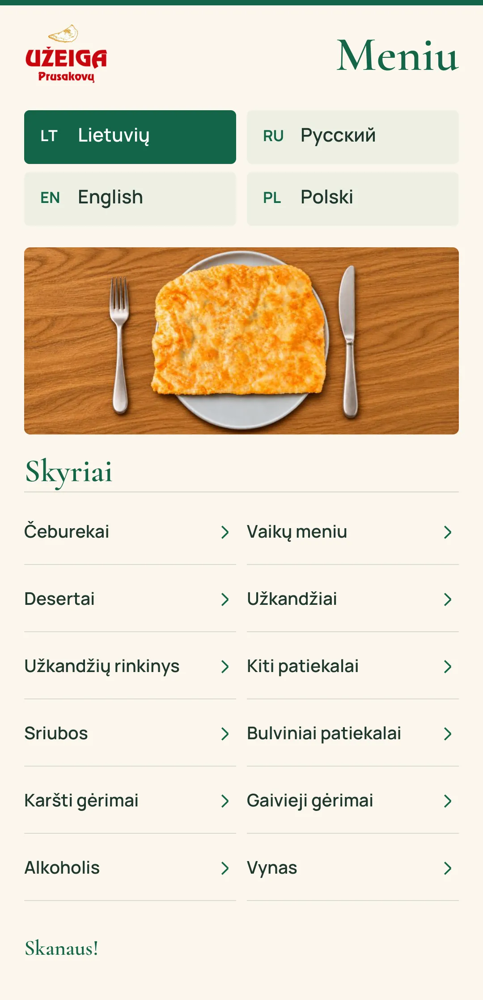
Meniu LT Lietuvių RU Русский EN English PL Polski Skyriai Skanaus! Čeburekai Vaikų meniu Desertai Užkandžiai Užkandžių rinkinys Kiti patiekalai Sriubos Bulviniai patiekalai Karšti gėrimai Alkoholis Vynas Gaivieji gėrimai
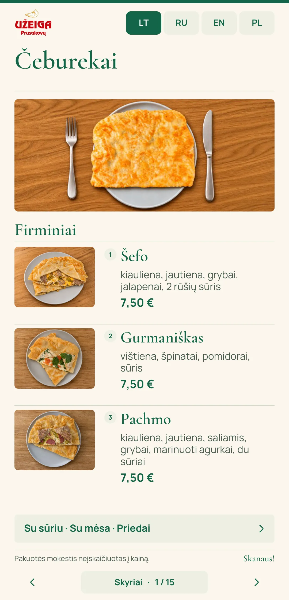
LT RU EN PL Čeburekai Firminiai 1 Šefo kiauliena, jautiena, grybai, jalapenai, 2 rūšių sūris 7,50 € 2 Gurmaniškas vištiena, špinatai, pomidorai, sūris 3 Pachmo kiauliena, jautiena, saliamis, grybai, marinuoti agurkai, du sūriai 7,50 € Su sūriu · Su mėsa · Priedai Pakuotės mokestis neįskaičiuotas į kainą. Skanaus! Skyriai · 1 / 15 7,50 €
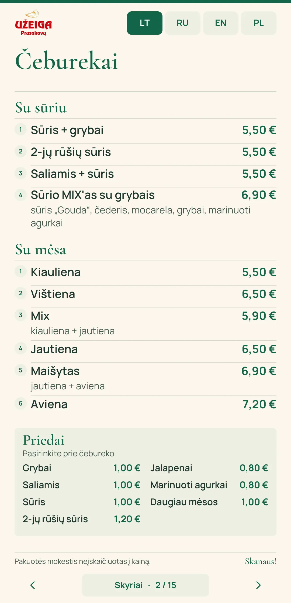
LT RU EN PL Čeburekai Su sūriu 1 5,50 € Sūris + grybai 2 5,50 € 2-jų rūšių sūris 3 5,50 € Saliamis + sūris Pakuotės mokestis neįskaičiuotas į kainą. Skanaus! Skyriai · 2 / 15 Su mėsa 1 5,50 € Kiauliena 2 Vištiena 3 5,90 € Mix kiauliena + jautiena 4 6,50 € Jautiena 5 6,90 € Maišytas jautiena + aviena 6 7,20 € Aviena Priedai Pasirinkite prie čebureko Grybai 1,00 € Jalapenai 0,80 € Saliamis 1,00 € Marinuoti agurkai 0,80 € Sūris 1,00 € Daugiau mėsos 1,00 € 2-jų rūšių sūris 1,20 € 4 Sūrio MIX'as su grybais 6,90 € sūris „Gouda“, čederis, mocarela, grybai, marinuoti agurkai 6,20 €
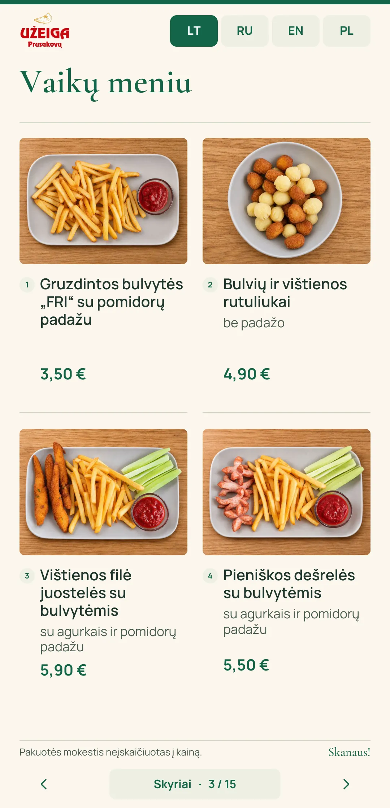
LT RU EN PL Vaikų meniu 1 Gruzdintos bulvytės „FRI“ su pomidorų padažu 3,50 € 2 Bulvių ir vištienos rutuliukai be padažo 4,90 € 3 Vištienos filė juostelės su bulvytėmis su agurkais ir pomidorų padažu 5,90 € 4 Pieniškos dešrelės su bulvytėmis su agurkais ir pomidorų padažu 5,50 € Pakuotės mokestis neįskaičiuotas į kainą. Skanaus! Skyriai · 3 / 15
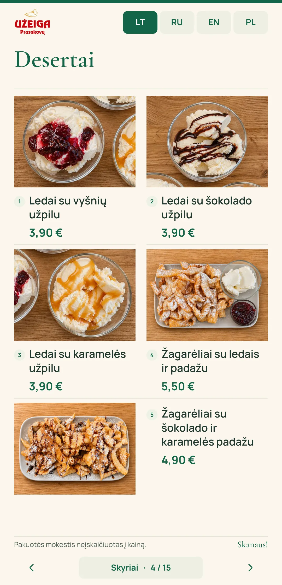
LT RU EN PL Desertai Pakuotės mokestis neįskaičiuotas į kainą. Skanaus! Skyriai · 4 / 15 1 Ledai su vyšnių užpilu 3,90 € 2 Ledai su šokolado užpilu 3,90 € 3 Ledai su karamelės užpilu 3,90 € 4 Žagarėliai su ledais ir padažu 5,50 € 5 Žagarėliai su šokolado ir karamelės padažu 4,90 €
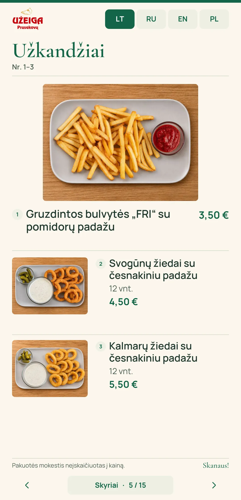
LT RU EN PL Užkandžiai Nr. 1–3 1 3,50 € Gruzdintos bulvytės „FRI“ su pomidorų padažu 2 Svogūnų žiedai su česnakiniu padažu 12 vnt. 4,50 € 3 Kalmarų žiedai su česnakiniu padažu 12 vnt. 5,50 € Pakuotės mokestis neįskaičiuotas į kainą. Skanaus! Skyriai · 5 / 15
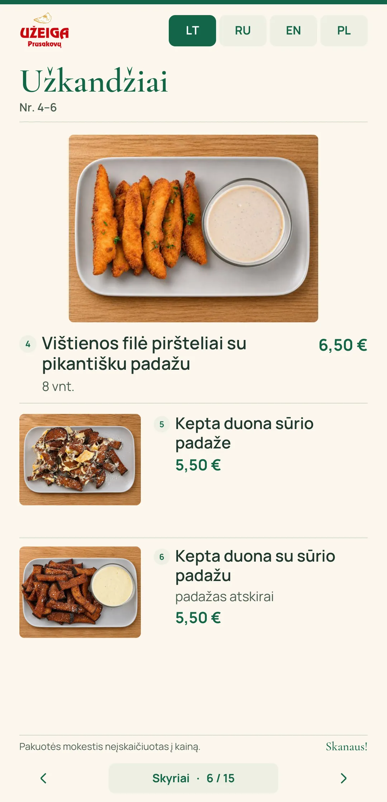
LT RU EN PL Užkandžiai Nr. 4–6 4 6,50 € Vištienos filė piršteliai su pikantišku padažu 8 vnt. 5 Kepta duona sūrio padaže 5,50 € 6 Kepta duona su sūrio padažu padažas atskirai 5,50 € Pakuotės mokestis neįskaičiuotas į kainą. Skanaus! Skyriai · 6 / 15
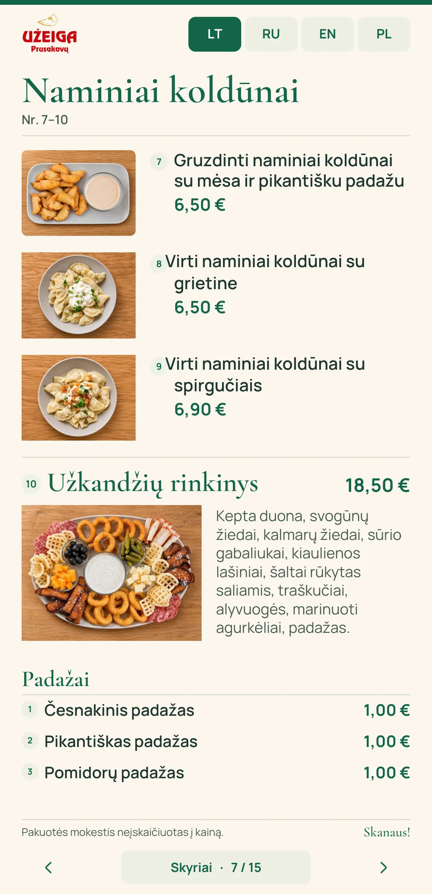
LT RU EN PL 7 Gruzdinti naminiai koldūnai su mėsa ir pikantišku padažu 6,50 € Pakuotės mokestis neįskaičiuotas į kainą. Skanaus! Skyriai · 7 / 15 Nr. 7–10 8 grietine 6,50 € 9 spirgučiais 6,90 € Užkandžių rinkinys 18,50 € 10 Kepta duona, svogūnų žiedai, kalmarų žiedai, sūrio gabaliukai, kiaulienos lašiniai, šaltai rūkytas saliamis, traškučiai, alyvuogės, marinuoti agurkėliai, padažas. Padažai 1 1,00 € Česnakinis padažas 2 1,00 € Pikantiškas padažas 3 1,00 € Pomidorų padažas Naminiai koldūnai Virti naminiai koldūnai su Virti naminiai koldūnai su
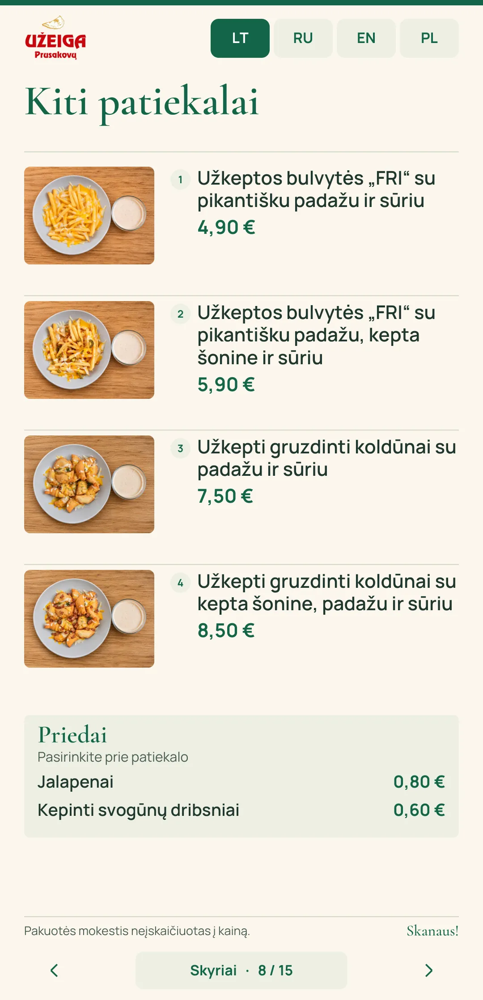
LT RU EN PL Kiti patiekalai 1 Užkeptos bulvytės „FRI“ su pikantišku padažu ir sūriu 2 Užkeptos bulvytės „FRI“ su pikantišku padažu, kepta šonine ir sūriu 3 Užkepti gruzdinti koldūnai su padažu ir sūriu 7,50 € 4 Užkepti gruzdinti koldūnai su kepta šonine, padažu ir sūriu 8,50 € Priedai Pasirinkite prie patiekalo Jalapenai 0,80 € Kepinti svogūnų dribsniai 0,60 € Pakuotės mokestis neįskaičiuotas į kainą. Skanaus! Skyriai · 8 / 15 4,90 € 5,90 €
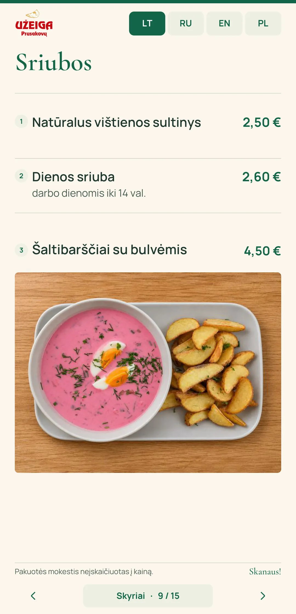
LT RU EN PL Sriubos 1 2,50 € 2 2,60 € Dienos sriuba darbo dienomis iki 14 val. 3 4,50 € Šaltibarščiai su bulvėmis Pakuotės mokestis neįskaičiuotas į kainą. Skanaus! Skyriai · 9 / 15 Natūralus vištienos sultinys
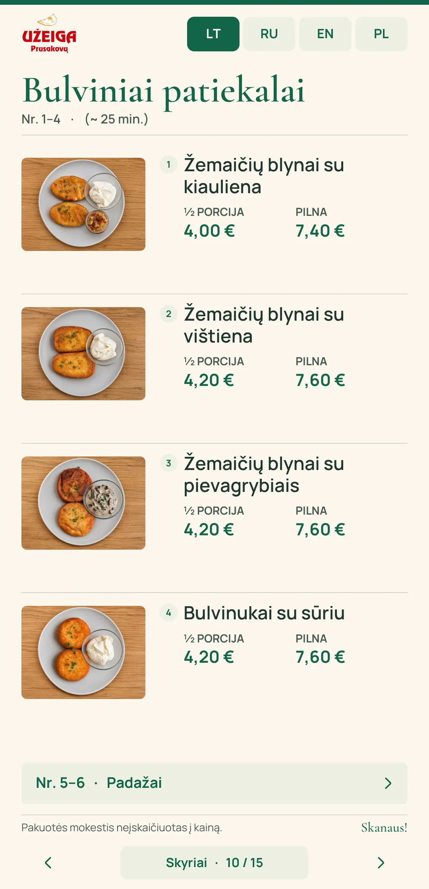
LT RU EN PL Bulviniai patiekalai Nr. 1–4 · (~ 25 min.) 1 Žemaičių blynai su kiauliena ½ PORCIJA 4,00 € PILNA 7,40 € 2 Žemaičių blynai su vištiena ½ PORCIJA 4,20 € PILNA 7,60 € 3 Žemaičių blynai su pievagrybiais ½ PORCIJA 4,20 € PILNA 7,60 € 4 Bulvinukai su sūriu ½ PORCIJA 4,20 € PILNA 7,60 € Nr. 5–6 · Padažai Pakuotės mokestis neįskaičiuotas į kainą. Skanaus! Skyriai · 10 / 15
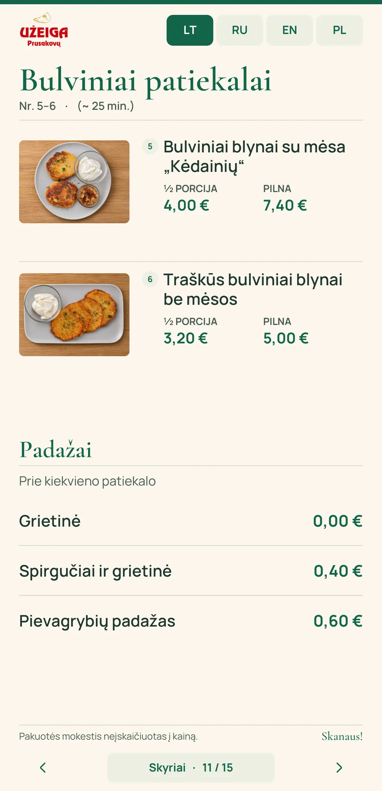
LT RU EN PL Bulviniai patiekalai Nr. 5–6 · (~ 25 min.) 5 Bulviniai blynai su mėsa „Kėdainių“ ½ PORCIJA 4,00 € PILNA 7,40 € 6 Traškūs bulviniai blynai be mėsos ½ PORCIJA 3,20 € PILNA 5,00 € Padažai Prie kiekvieno patiekalo 0,00 € Grietinė 0,40 € Spirgučiai ir grietinė 0,60 € Pievagrybių padažas Pakuotės mokestis neįskaičiuotas į kainą. Skanaus! Skyriai · 11 / 15
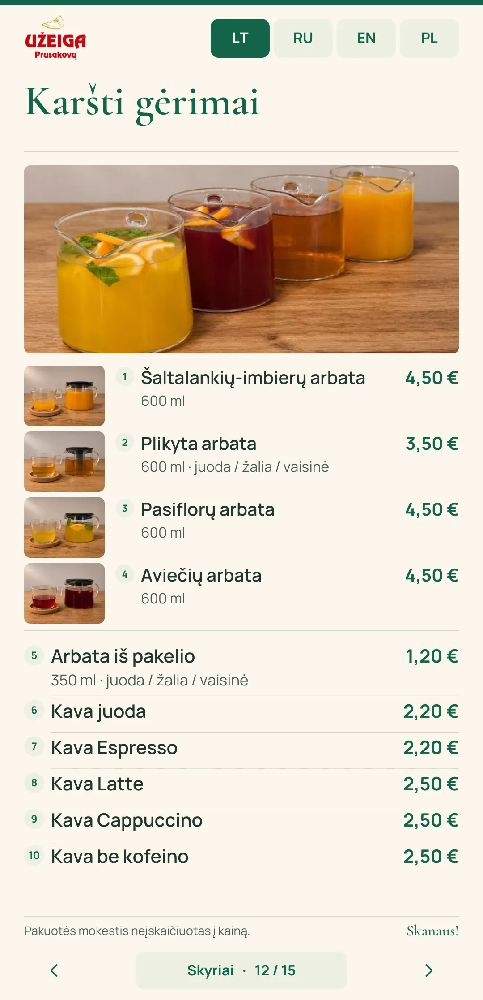
LT RU EN PL Karšti gėrimai 1 4,50 € Šaltalankių-imbierų arbata 600 ml 2 3,50 € Plikyta arbata 600 ml · juoda / žalia / vaisinė 3 4,50 € Pasiflorų arbata 600 ml 4 4,50 € Aviečių arbata 600 ml 5 1,20 € Arbata iš pakelio 350 ml · juoda / žalia / vaisinė 6 2,20 € Kava juoda 7 2,20 € Kava Espresso 8 2,50 € Kava Latte 9 2,50 € Kava Cappuccino 10 2,50 € Kava be kofeino Pakuotės mokestis neįskaičiuotas į kainą. Skanaus! Skyriai · 12 / 15
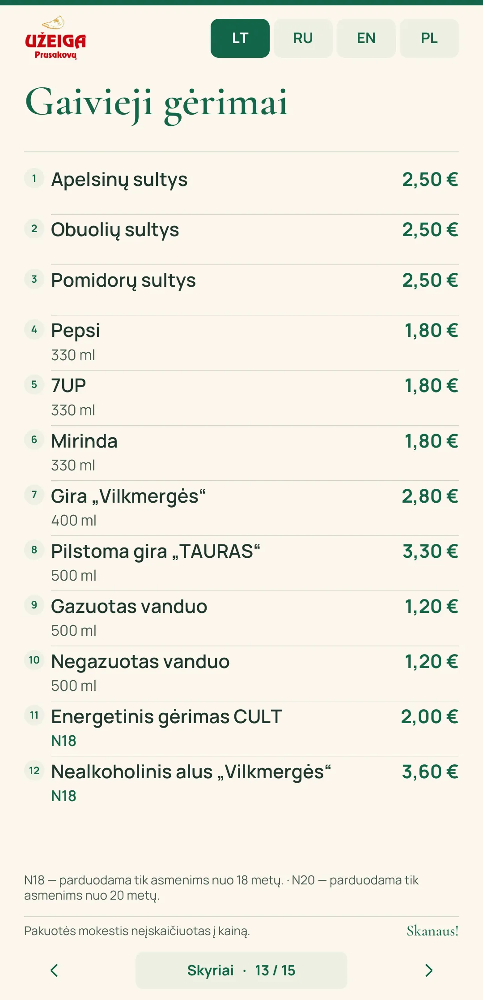
LT RU EN PL 1 2,50 € Apelsinų sultys 2 2,50 € Obuolių sultys 3 2,50 € Pomidorų sultys 4 1,80 € Pepsi 330 ml 5 1,80 € 7UP 330 ml 6 1,80 € Mirinda 330 ml 7 2,80 € Gira „Vilkmergės“ 400 ml 8 3,30 € Pilstoma gira „TAURAS“ 500 ml 9 1,20 € Gazuotas vanduo 500 ml 10 1,20 € Negazuotas vanduo 500 ml 11 2,00 € Energetinis gėrimas CULT N18 12 3,60 € Nealkoholinis alus „Vilkmergės“ N18 N18 — parduodama tik asmenims nuo 18 metų. · N20 — parduodama tik asmenims nuo 20 metų. Pakuotės mokestis neįskaičiuotas į kainą. Skanaus! Skyriai · 13 / 15 Gaivieji gėrimai
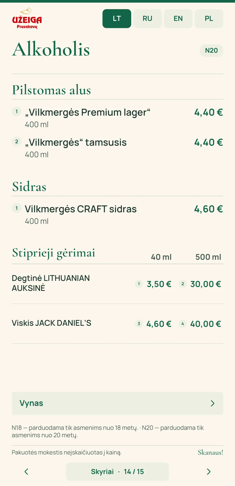
LT RU EN PL Alkoholis N20 Pilstomas alus 1 4,40 € „Vilkmergės Premium lager“ 400 ml 2 4,40 € „Vilkmergės“ tamsusis 400 ml Sidras 1 4,60 € Vilkmergės CRAFT sidras 400 ml Stiprieji gėrimai 40 ml 500 ml Degtinė LITHUANIAN AUKSINĖ 1 3,50 € 2 30,00 € Viskis JACK DANIEL’S 3 4,60 € 4 40,00 € Vynas N18 — parduodama tik asmenims nuo 18 metų. · N20 — parduodama tik asmenims nuo 20 metų. Pakuotės mokestis neįskaičiuotas į kainą. Skanaus! Skyriai · 14 / 15
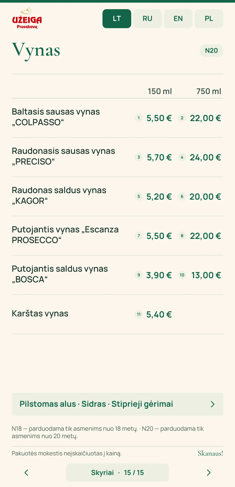
LT RU EN PL Vynas N20 150 ml 750 ml Baltasis sausas vynas „COLPASSO“ 1 5,50 € 2 22,00 € Raudonasis sausas vynas „PRECISO“ 3 5,70 € 4 24,00 € Raudonas saldus vynas „KAGOR“ 5 5,20 € 6 20,00 € Putojantis vynas „Escanza PROSECCO“ 7 5,50 € 8 22,00 € Putojantis saldus vynas „BOSCA“ 9 3,90 € 10 13,00 € Karštas vynas 11 5,40 € Pilstomas alus · Sidras · Stiprieji gėrimai N18 — parduodama tik asmenims nuo 18 metų. · N20 — parduodama tik asmenims nuo 20 metų. Pakuotės mokestis neįskaičiuotas į kainą. Skanaus! Skyriai · 15 / 15
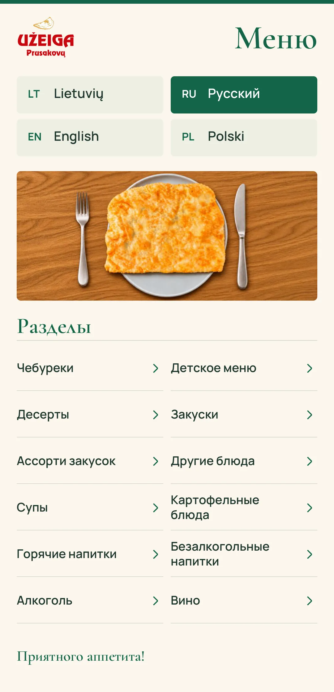
Меню LT Lietuvių RU Русский EN English PL Polski Разделы Приятного аппетита! Чебуреки Детское меню Десерты Закуски Ассорти закусок Другие блюда Супы Картофельные блюда Горячие напитки Алкоголь Вино Безалкогольные напитки
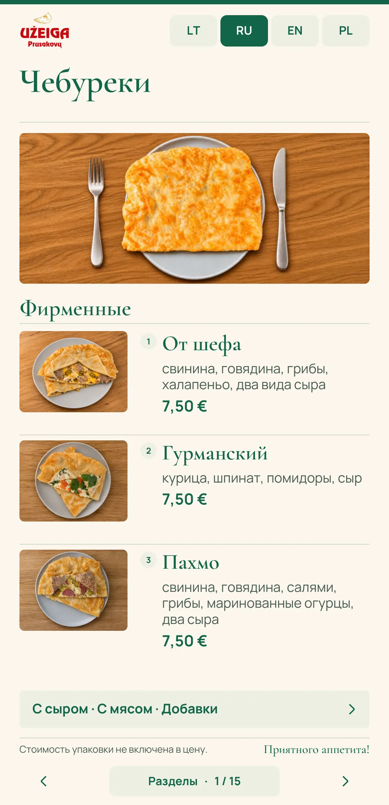
LT RU EN PL Чебуреки Фирменные 1 От шефа свинина, говядина, грибы, халапеньо, два вида сыра 7,50 € 2 Гурманский курица, шпинат, помидоры, сыр 3 Пахмо свинина, говядина, салями, грибы, маринованные огурцы, два сыра 7,50 € С сыром · С мясом · Добавки Стоимость упаковки не включена в цену. Приятного аппетита! Разделы · 1 / 15 7,50 €
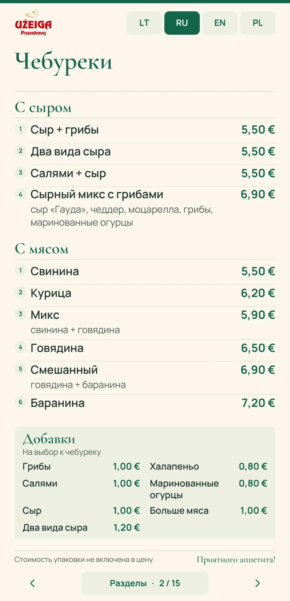
LT RU EN PL Чебуреки С сыром 1 5,50 € Сыр + грибы 2 5,50 € Два вида сыра 3 5,50 € Салями + сыр Стоимость упаковки не включена в цену. Приятного аппетита! Разделы · 2 / 15 С мясом 1 5,50 € Свинина 2 Курица 3 5,90 € Микс свинина + говядина 4 6,50 € Говядина 5 6,90 € Смешанный говядина + баранина 6 7,20 € Баранина Добавки На выбор к чебуреку Грибы 1,00 € Халапеньо 0,80 € Салями 1,00 € Маринованные огурцы 0,80 € Сыр 1,00 € Больше мяса 1,00 € Два вида сыра 1,20 € 4 Сырный микс с грибами 6,90 € сыр «Гауда», чеддер, моцарелла, грибы, маринованные огурцы 6,20 €
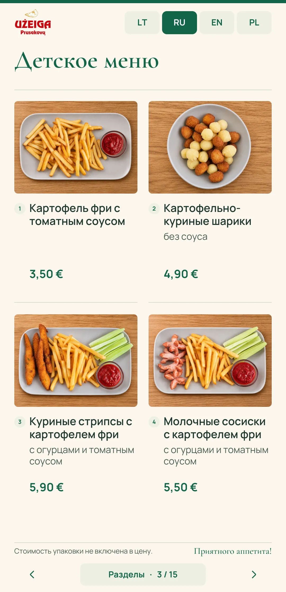
LT RU EN PL Детское меню 1 Картофель фри с томатным соусом 3,50 € 2 Картофельно- куриные шарики без соуса 4,90 € 3 Куриные стрипсы с картофелем фри с огурцами и томатным соусом 5,90 € 4 Молочные сосиски с картофелем фри с огурцами и томатным соусом 5,50 € Стоимость упаковки не включена в цену. Приятного аппетита! Разделы · 3 / 15
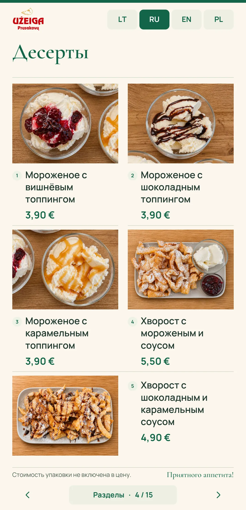
LT RU EN PL Десерты Стоимость упаковки не включена в цену. Приятного аппетита! Разделы · 4 / 15 1 Мороженое с вишнёвым топпингом 3,90 € 2 Мороженое с шоколадным топпингом 3,90 € 3 Мороженое с карамельным топпингом 3,90 € 4 Хворост с мороженым и соусом 5,50 € 5 Хворост с шоколадным и карамельным соусом 4,90 €
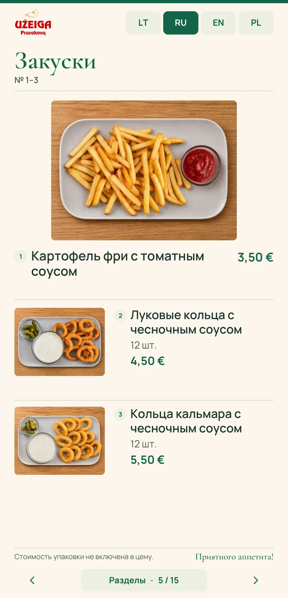
LT RU EN PL Закуски № 1–3 1 3,50 € Картофель фри с томатным соусом 2 Луковые кольца с чесночным соусом 12 шт. 4,50 € 3 Кольца кальмара с чесночным соусом 12 шт. 5,50 € Стоимость упаковки не включена в цену. Приятного аппетита! Разделы · 5 / 15
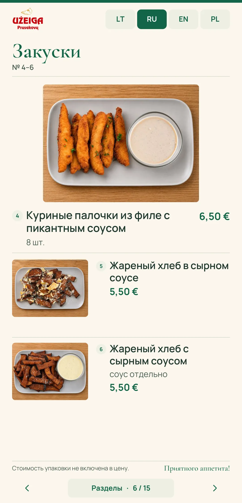
LT RU EN PL Закуски № 4–6 4 6,50 € Куриные палочки из филе с пикантным соусом 8 шт. 5 Жареный хлеб в сырном соусе 5,50 € 6 Жареный хлеб с сырным соусом соус отдельно 5,50 € Стоимость упаковки не включена в цену. Приятного аппетита! Разделы · 6 / 15
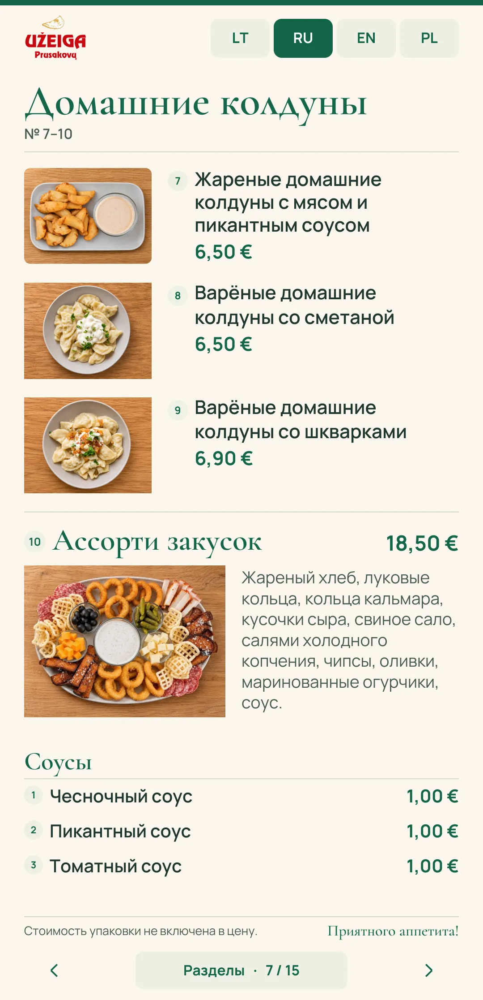
LT RU EN PL 7 Жареные домашние колдуны с мясом и пикантным соусом 6,50 € Стоимость упаковки не включена в цену. Приятного аппетита! Разделы · 7 / 15 № 7–10 8 Варёные домашние 6,50 € 9 Варёные домашние 6,90 € Ассорти закусок 18,50 € 10 Жареный хлеб, луковые кольца, кольца кальмара, кусочки сыра, свиное сало, салями холодного копчения, чипсы, оливки, маринованные огурчики, соус. Соусы 1 1,00 € Чесночный соус 2 1,00 € Пикантный соус 3 1,00 € Томатный соус Домашние колдуны колдуны со сметаной колдуны со шкварками
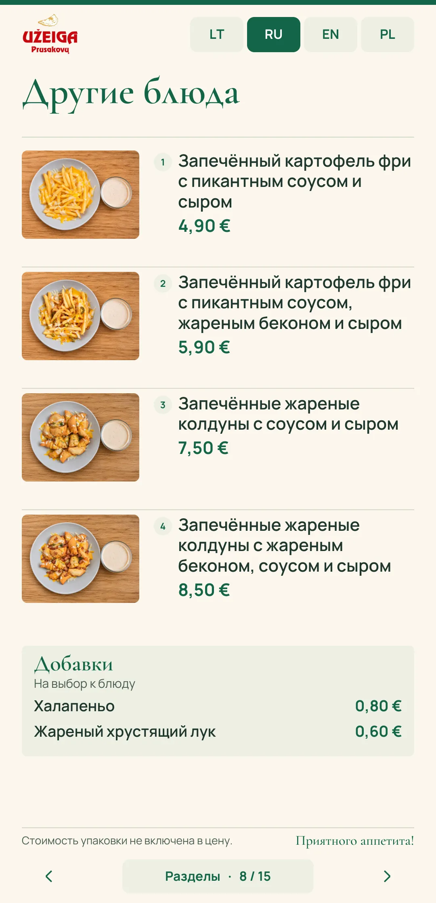
LT RU EN PL Другие блюда 1 Запечённый картофель фри с пикантным соусом и сыром 2 Запечённый картофель фри с пикантным соусом, жареным беконом и сыром 3 Запечённые жареные колдуны с соусом и сыром 7,50 € 4 Запечённые жареные колдуны с жареным беконом, соусом и сыром 8,50 € Добавки На выбор к блюду Халапеньо 0,80 € Жареный хрустящий лук 0,60 € Стоимость упаковки не включена в цену. Приятного аппетита! Разделы · 8 / 15 4,90 € 5,90 €
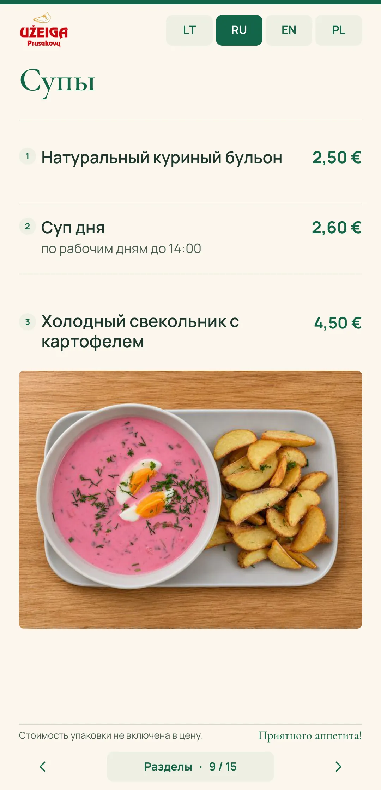
LT RU EN PL Супы 1 2,50 € 2 2,60 € Суп дня по рабочим дням до 14:00 3 4,50 € Холодный свекольник с картофелем Стоимость упаковки не включена в цену. Приятного аппетита! Разделы · 9 / 15 Натуральный куриный бульон
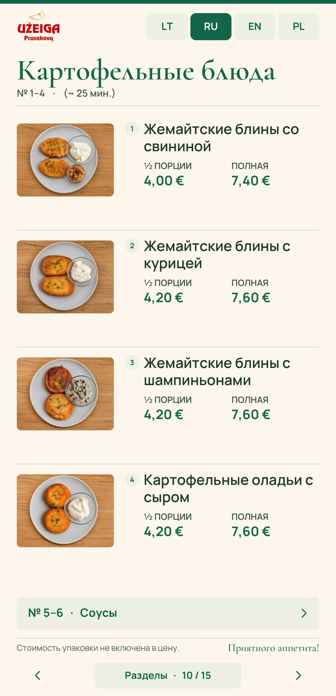
LT RU EN PL Картофельные блюда № 1–4 · (~ 25 мин.) 1 Жемайтские блины со свининой ½ ПОРЦИИ 4,00 € ПОЛНАЯ 7,40 € 2 Жемайтские блины с курицей ½ ПОРЦИИ 4,20 € ПОЛНАЯ 7,60 € 3 Жемайтские блины с шампиньонами ½ ПОРЦИИ 4,20 € ПОЛНАЯ 7,60 € 4 Картофельные оладьи с сыром ½ ПОРЦИИ 4,20 € ПОЛНАЯ 7,60 € № 5–6 · Соусы Стоимость упаковки не включена в цену. Приятного аппетита! Разделы · 10 / 15
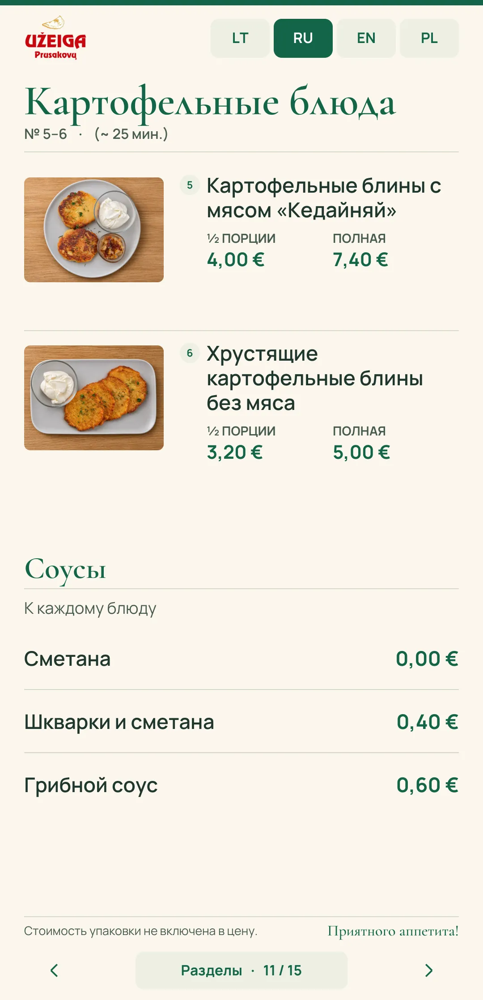
LT RU EN PL Картофельные блюда № 5–6 · (~ 25 мин.) 5 Картофельные блины с мясом «Кедайняй» ½ ПОРЦИИ 4,00 € ПОЛНАЯ 7,40 € 6 Хрустящие картофельные блины без мяса ½ ПОРЦИИ 3,20 € ПОЛНАЯ 5,00 € Соусы К каждому блюду 0,00 € Сметана 0,40 € Шкварки и сметана 0,60 € Грибной соус Стоимость упаковки не включена в цену. Приятного аппетита! Разделы · 11 / 15
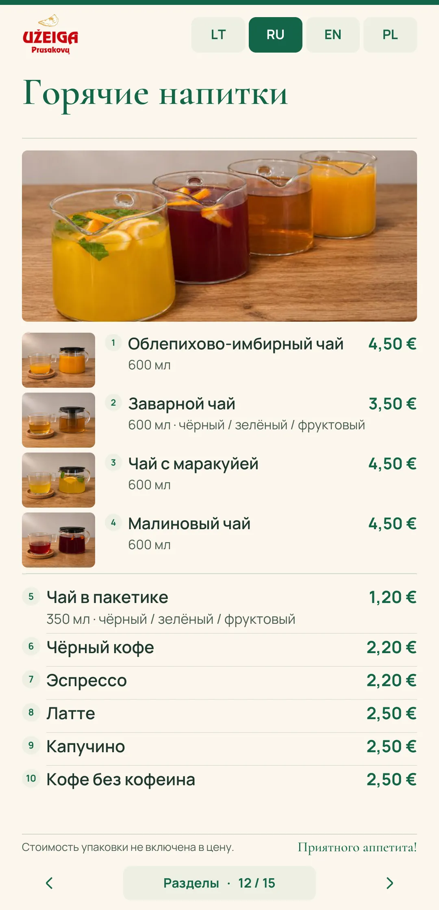
LT RU EN PL Горячие напитки 1 4,50 € Облепихово-имбирный чай 600 мл 2 3,50 € Заварной чай 600 мл · чёрный / зелёный / фруктовый 3 4,50 € Чай с маракуйей 600 мл 4 4,50 € Малиновый чай 600 мл 5 1,20 € Чай в пакетике 350 мл · чёрный / зелёный / фруктовый 6 2,20 € Чёрный кофе 7 2,20 € Эспрессо 8 2,50 € Латте 9 2,50 € Капучино 10 2,50 € Кофе без кофеина Стоимость упаковки не включена в цену. Приятного аппетита! Разделы · 12 / 15
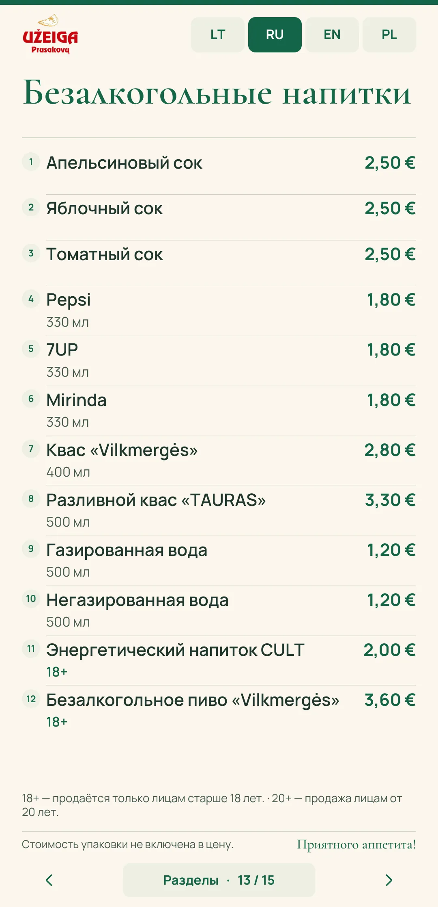
LT RU EN PL 1 2,50 € Апельсиновый сок 2 2,50 € Яблочный сок 3 2,50 € Томатный сок 4 1,80 € Pepsi 330 мл 5 1,80 € 7UP 330 мл 6 1,80 € Mirinda 330 мл 7 2,80 € Квас «Vilkmergės» 400 мл 8 3,30 € Разливной квас «TAURAS» 500 мл 9 1,20 € Газированная вода 500 мл 10 1,20 € Негазированная вода 500 мл 11 2,00 € Энергетический напиток CULT 18+ 12 3,60 € Безалкогольное пиво «Vilkmergės» 18+ 18+ — продаётся только лицам старше 18 лет. · 20+ — продажа лицам от 20 лет. Стоимость упаковки не включена в цену. Приятного аппетита! Разделы · 13 / 15 Безалкогольные напитки
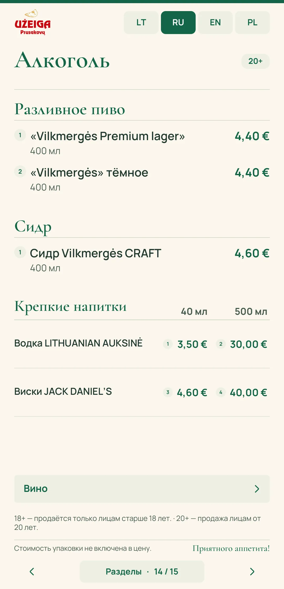
LT RU EN PL Алкоголь 20+ Разливное пиво 1 4,40 € «Vilkmergės Premium lager» 400 мл 2 4,40 € «Vilkmergės» тёмное 400 мл Сидр 1 4,60 € Сидр Vilkmergės CRAFT 400 мл Крепкие напитки 40 мл 500 мл Водка LITHUANIAN AUKSINĖ 1 3,50 € 2 30,00 € Виски JACK DANIEL’S 3 4,60 € 4 40,00 € Вино 18+ — продаётся только лицам старше 18 лет. · 20+ — продажа лицам от 20 лет. Стоимость упаковки не включена в цену. Приятного аппетита! Разделы · 14 / 15
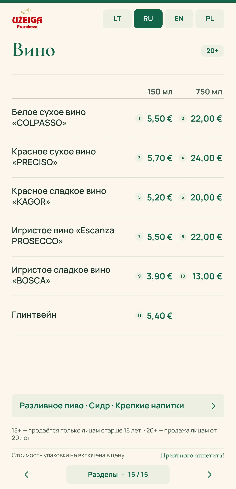
LT RU EN PL Вино 20+ 150 мл 750 мл Белое сухое вино «COLPASSO» 1 5,50 € 2 22,00 € Красное сухое вино «PRECISO» 3 5,70 € 4 24,00 € Красное сладкое вино «KAGOR» 5 5,20 € 6 20,00 € Игристое вино «Escanza PROSECCO» 7 5,50 € 8 22,00 € Игристое сладкое вино «BOSCA» 9 3,90 € 10 13,00 € Глинтвейн 11 5,40 € Разливное пиво · Сидр · Крепкие напитки 18+ — продаётся только лицам старше 18 лет. · 20+ — продажа лицам от 20 лет. Стоимость упаковки не включена в цену. Приятного аппетита! Разделы · 15 / 15
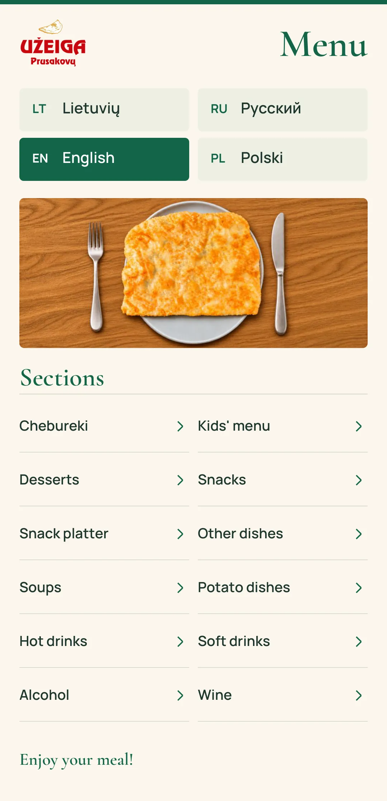
Menu LT Lietuvių RU Русский EN English PL Polski Sections Enjoy your meal! Chebureki Kids' menu Desserts Snacks Snack platter Other dishes Soups Potato dishes Hot drinks Alcohol Wine Soft drinks
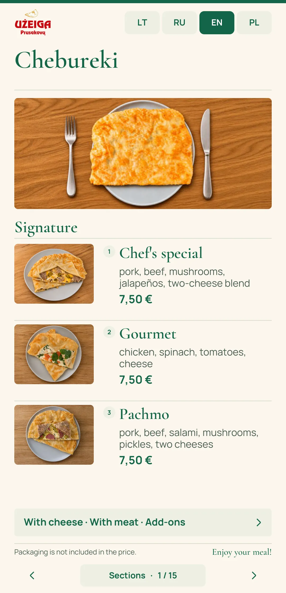
LT RU EN PL Chebureki Signature 1 Chef's special pork, beef, mushrooms, jalapeños, two-cheese blend 7,50 € 2 Gourmet chicken, spinach, tomatoes, cheese 3 Pachmo pork, beef, salami, mushrooms, pickles, two cheeses 7,50 € With cheese · With meat · Add-ons Packaging is not included in the price. Enjoy your meal! Sections · 1 / 15 7,50 €
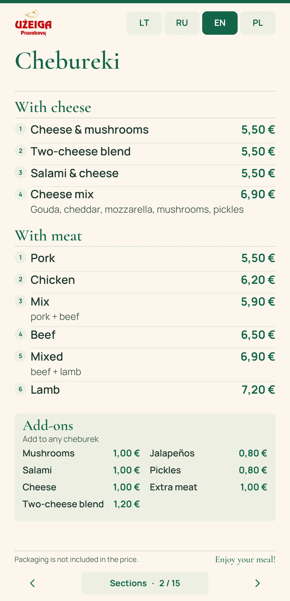
LT RU EN PL Chebureki With cheese 1 5,50 € Cheese & mushrooms 2 5,50 € Two-cheese blend 3 5,50 € Salami & cheese Packaging is not included in the price. Enjoy your meal! Sections · 2 / 15 With meat 1 5,50 € Pork 2 Chicken 3 5,90 € Mix pork + beef 4 6,50 € Beef 5 6,90 € Mixed beef + lamb 6 7,20 € Lamb Add-ons Add to any cheburek Mushrooms 1,00 € Jalapeños 0,80 € Salami 1,00 € Pickles 0,80 € Cheese 1,00 € Extra meat 1,00 € Two-cheese blend 1,20 € 4 Cheese mix 6,90 € Gouda, cheddar, mozzarella, mushrooms, pickles 6,20 €
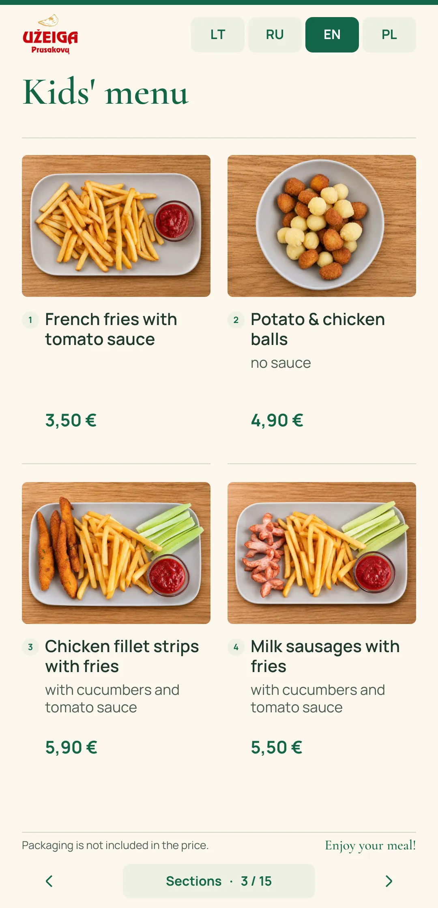
LT RU EN PL Kids' menu 1 French fries with tomato sauce 3,50 € 2 Potato & chicken balls no sauce 4,90 € 3 Chicken fillet strips with fries with cucumbers and tomato sauce 5,90 € 4 Milk sausages with fries with cucumbers and tomato sauce 5,50 € Packaging is not included in the price. Enjoy your meal! Sections · 3 / 15
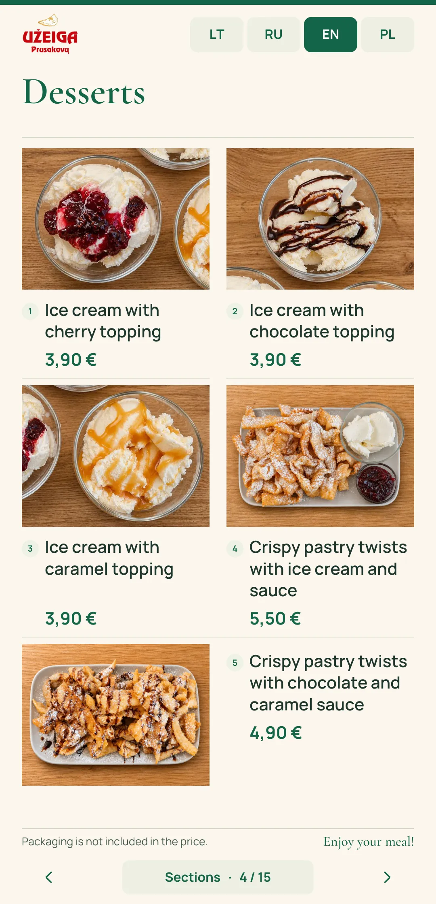
LT RU EN PL Desserts Packaging is not included in the price. Enjoy your meal! Sections · 4 / 15 1 Ice cream with cherry topping 3,90 € 2 Ice cream with chocolate topping 3,90 € 3 Ice cream with caramel topping 3,90 € 4 Crispy pastry twists with ice cream and sauce 5,50 € 5 Crispy pastry twists with chocolate and caramel sauce 4,90 €
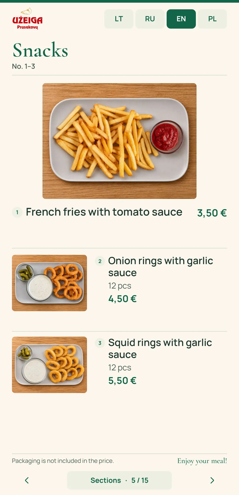
LT RU EN PL Snacks No. 1–3 1 3,50 € French fries with tomato sauce 2 Onion rings with garlic sauce 12 pcs 4,50 € 3 Squid rings with garlic sauce 12 pcs 5,50 € Packaging is not included in the price. Enjoy your meal! Sections · 5 / 15
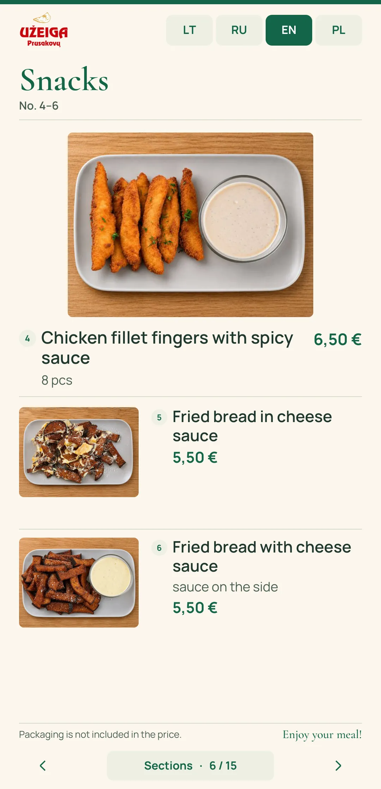
LT RU EN PL Snacks No. 4–6 4 6,50 € Chicken fillet fingers with spicy sauce 8 pcs 5 Fried bread in cheese sauce 5,50 € 6 Fried bread with cheese sauce sauce on the side 5,50 € Packaging is not included in the price. Enjoy your meal! Sections · 6 / 15
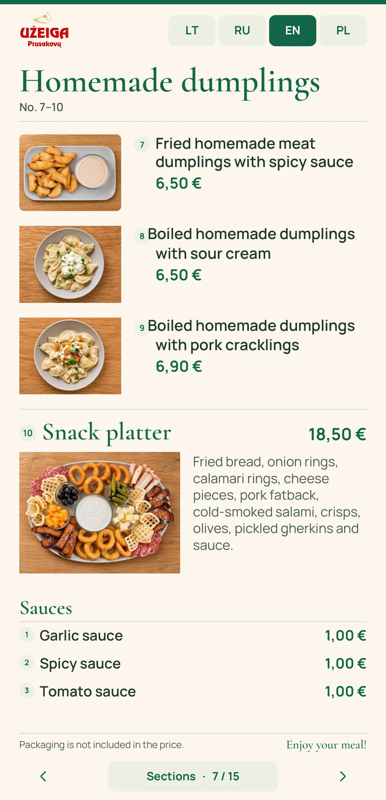
LT RU EN PL 7 Fried homemade meat dumplings with spicy sauce 6,50 € Packaging is not included in the price. Enjoy your meal! Sections · 7 / 15 No. 7–10 8 with sour cream 6,50 € 9 with pork cracklings 6,90 € Snack platter 18,50 € 10 Fried bread, onion rings, calamari rings, cheese pieces, pork fatback, cold-smoked salami, crisps, olives, pickled gherkins and sauce. Sauces 1 1,00 € Garlic sauce 2 1,00 € Spicy sauce 3 1,00 € Tomato sauce Homemade dumplings Boiled homemade dumplings Boiled homemade dumplings
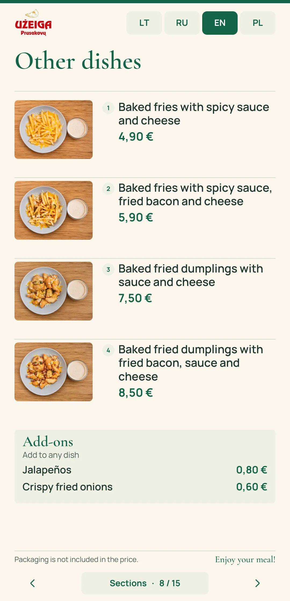
LT RU EN PL Other dishes 1 Baked fries with spicy sauce and cheese 2 Baked fries with spicy sauce, fried bacon and cheese 3 Baked fried dumplings with sauce and cheese 7,50 € 4 Baked fried dumplings with fried bacon, sauce and cheese 8,50 € Add-ons Add to any dish Jalapeños 0,80 € Crispy fried onions 0,60 € Packaging is not included in the price. Enjoy your meal! Sections · 8 / 15 4,90 € 5,90 €
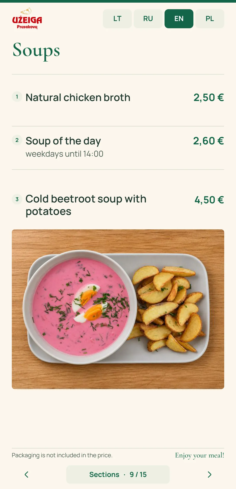
LT RU EN PL Soups 1 2,50 € 2 2,60 € Soup of the day weekdays until 14:00 3 4,50 € Cold beetroot soup with potatoes Packaging is not included in the price. Enjoy your meal! Sections · 9 / 15 Natural chicken broth
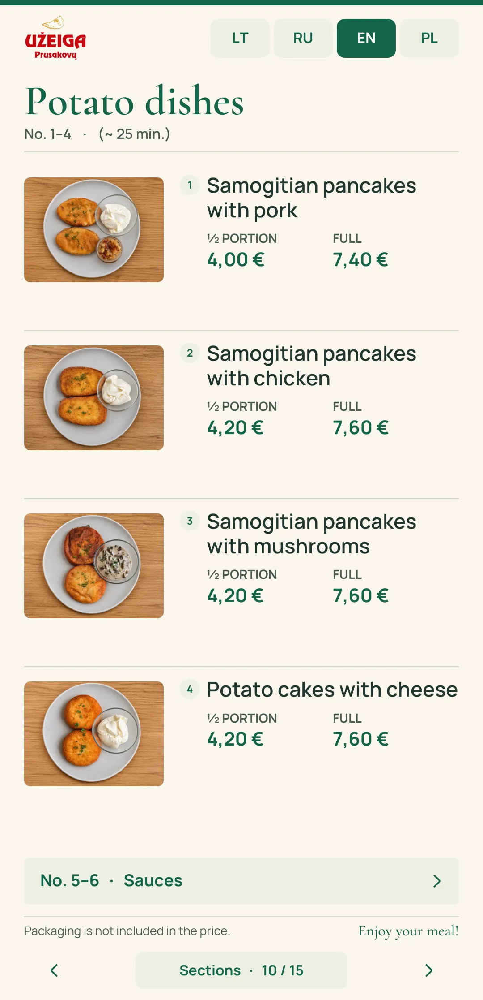
LT RU EN PL Potato dishes No. 1–4 · (~ 25 min.) 1 Samogitian pancakes with pork ½ PORTION 4,00 € FULL 7,40 € 2 Samogitian pancakes with chicken ½ PORTION 4,20 € FULL 7,60 € 3 Samogitian pancakes with mushrooms ½ PORTION 4,20 € FULL 7,60 € 4 Potato cakes with cheese ½ PORTION 4,20 € FULL 7,60 € No. 5–6 · Sauces Packaging is not included in the price. Enjoy your meal! Sections · 10 / 15
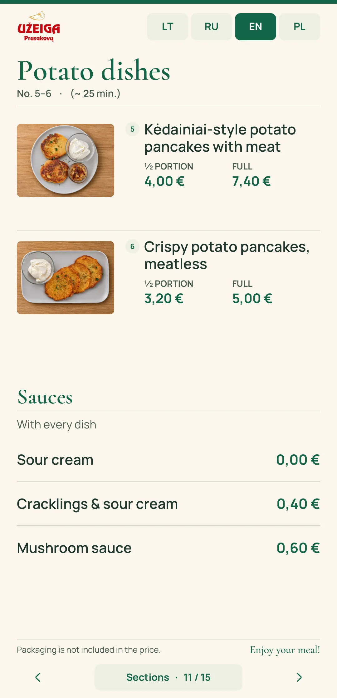
LT RU EN PL Potato dishes No. 5–6 · (~ 25 min.) 5 Kėdainiai-style potato pancakes with meat ½ PORTION 4,00 € FULL 7,40 € 6 Crispy potato pancakes, meatless ½ PORTION 3,20 € FULL 5,00 € Sauces With every dish 0,00 € Sour cream 0,40 € Cracklings & sour cream 0,60 € Mushroom sauce Packaging is not included in the price. Enjoy your meal! Sections · 11 / 15
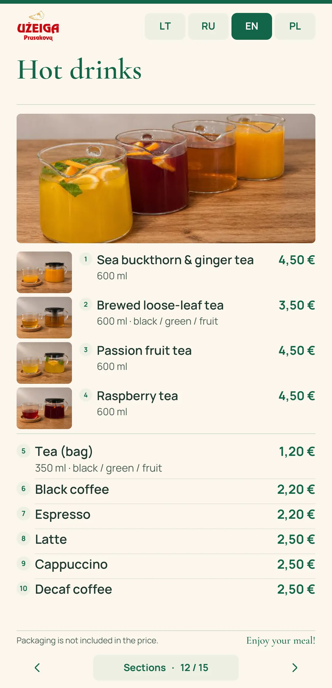
LT RU EN PL Hot drinks 1 4,50 € Sea buckthorn & ginger tea 600 ml 2 3,50 € Brewed loose-leaf tea 600 ml · black / green / fruit 3 4,50 € Passion fruit tea 600 ml 4 4,50 € Raspberry tea 600 ml 5 1,20 € Tea (bag) 350 ml · black / green / fruit 6 2,20 € Black coffee 7 2,20 € Espresso 8 2,50 € Latte 9 2,50 € Cappuccino 10 2,50 € Decaf coffee Packaging is not included in the price. Enjoy your meal! Sections · 12 / 15
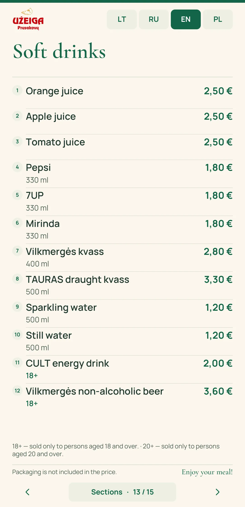
LT RU EN PL 1 2,50 € Orange juice 2 2,50 € Apple juice 3 2,50 € Tomato juice 4 1,80 € Pepsi 330 ml 5 1,80 € 7UP 330 ml 6 1,80 € Mirinda 330 ml 7 2,80 € Vilkmergės kvass 400 ml 8 3,30 € TAURAS draught kvass 500 ml 9 1,20 € Sparkling water 500 ml 10 1,20 € Still water 500 ml 11 2,00 € CULT energy drink 18+ 12 3,60 € Vilkmergės non-alcoholic beer 18+ 18+ — sold only to persons aged 18 and over. · 20+ — sold only to persons aged 20 and over. Packaging is not included in the price. Enjoy your meal! Sections · 13 / 15 Soft drinks
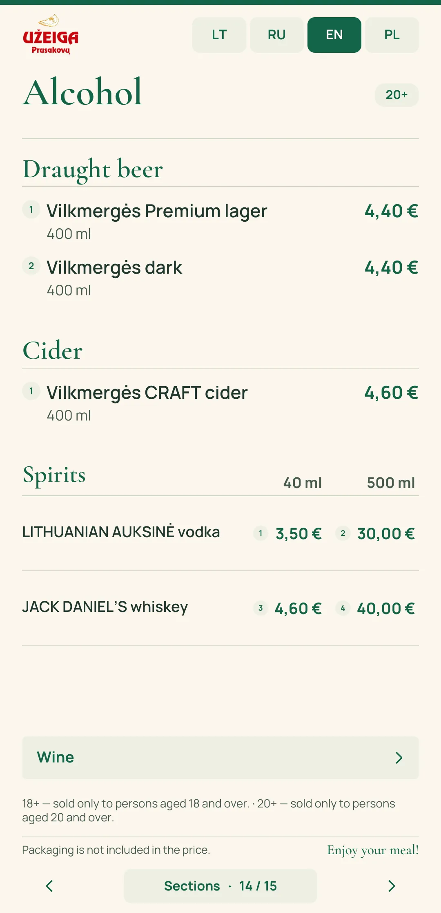
LT RU EN PL Alcohol 20+ Draught beer 1 4,40 € Vilkmergės Premium lager 400 ml 2 4,40 € Vilkmergės dark 400 ml Cider 1 4,60 € Vilkmergės CRAFT cider 400 ml Spirits 40 ml 500 ml LITHUANIAN AUKSINĖ vodka 1 3,50 € 2 30,00 € JACK DANIEL’S whiskey 3 4,60 € 4 40,00 € Wine 18+ — sold only to persons aged 18 and over. · 20+ — sold only to persons aged 20 and over. Packaging is not included in the price. Enjoy your meal! Sections · 14 / 15
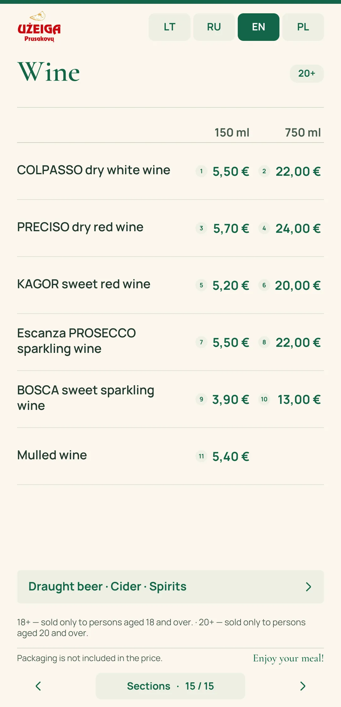
LT RU EN PL Wine 20+ 150 ml 750 ml COLPASSO dry white wine 1 5,50 € 2 22,00 € PRECISO dry red wine 3 5,70 € 4 24,00 € KAGOR sweet red wine 5 5,20 € 6 20,00 € Escanza PROSECCO sparkling wine 7 5,50 € 8 22,00 € BOSCA sweet sparkling wine 9 3,90 € 10 13,00 € Mulled wine 11 5,40 € Draught beer · Cider · Spirits 18+ — sold only to persons aged 18 and over. · 20+ — sold only to persons aged 20 and over. Packaging is not included in the price. Enjoy your meal! Sections · 15 / 15
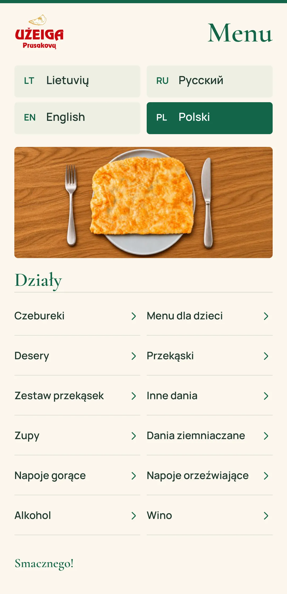
Menu LT Lietuvių RU Русский EN English PL Polski Działy Smacznego! Czebureki Menu dla dzieci Desery Przekąski Zestaw przekąsek Inne dania Zupy Dania ziemniaczane Napoje gorące Alkohol Wino Napoje orzeźwiające
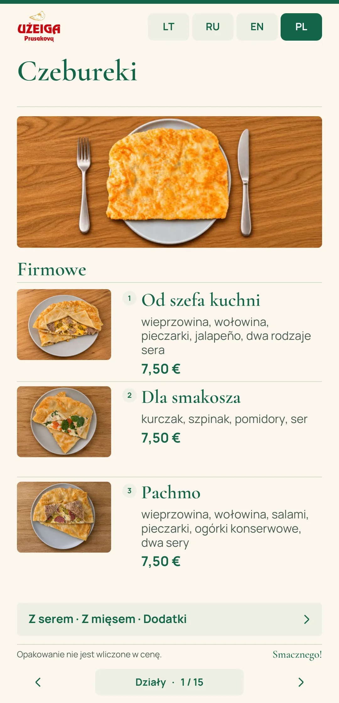
LT RU EN PL Czebureki Firmowe 1 Od szefa kuchni wieprzowina, wołowina, pieczarki, jalapeño, dwa rodzaje sera 7,50 € 2 Dla smakosza kurczak, szpinak, pomidory, ser 3 Pachmo wieprzowina, wołowina, salami, pieczarki, ogórki konserwowe, dwa sery 7,50 € Z serem · Z mięsem · Dodatki Opakowanie nie jest wliczone w cenę. Smacznego! Działy · 1 / 15 7,50 €
LT RU EN PL Czebureki Z serem 1 5,50 € Ser i pieczarki 2 5,50 € Dwa rodzaje sera 3 5,50 € Salami i ser Opakowanie nie jest wliczone w cenę. Smacznego! Działy · 2 / 15 Z mięsem 1 5,50 € Wieprzowina 2 Kurczak 3 5,90 € Mix wieprzowina + wołowina 4 6,50 € Wołowina 5 6,90 € Mieszany wołowina + jagnięcina 6 7,20 € Jagnięcina Dodatki Do wyboru do czeburka Pieczarki 1,00 € Jalapeño 0,80 € Salami 1,00 € Ogórki konserwowe 0,80 € Ser 1,00 € Więcej mięsa 1,00 € Dwa rodzaje sera 1,20 € 4 Mix serów z pieczarkami 6,90 € ser gouda, cheddar, mozzarella, pieczarki, ogórki konserwowe 6,20 €
LT RU EN PL Menu dla dzieci 1 Frytki z sosem pomidorowym 3,50 € 2 Kulki ziemniaczano- drobiowe bez sosu 4,90 € 3 Polędwiczki z kurczaka z frytkami z ogórkami i sosem pomidorowym 5,90 € 4 Parówki z frytkami z ogórkami i sosem pomidorowym 5,50 € Opakowanie nie jest wliczone w cenę. Smacznego! Działy · 3 / 15
LT RU EN PL Desery Opakowanie nie jest wliczone w cenę. Smacznego! Działy · 4 / 15 1 Lody z polewą wiśniową 3,90 € 2 Lody z polewą czekoladową 3,90 € 3 Lody z polewą karmelową 3,90 € 4 Faworki z lodami i sosem 5,50 € 5 Faworki z sosem czekoladowym i karmelowym 4,90 €
LT RU EN PL Przekąski Nr 1–3 1 3,50 € Frytki z sosem pomidorowym 2 Krążki cebulowe z sosem czosnkowym 12 szt. 4,50 € 3 Krążki kalmarów z sosem czosnkowym 12 szt. 5,50 € Opakowanie nie jest wliczone w cenę. Smacznego! Działy · 5 / 15
LT RU EN PL Przekąski Nr 4–6 4 6,50 € Paluszki z filetu z kurczaka z pikantnym sosem 8 szt. 5 Smażony chleb w sosie serowym 5,50 € 6 Smażony chleb z sosem serowym sos osobno 5,50 € Opakowanie nie jest wliczone w cenę. Smacznego! Działy · 6 / 15
LT RU EN PL 7 Smażone domowe kołduny z mięsem i pikantnym sosem 6,50 € Opakowanie nie jest wliczone w cenę. Smacznego! Działy · 7 / 15 Nr 7–10 8 ze śmietaną 6,50 € 9 ze skwarkami 6,90 € Zestaw przekąsek 18,50 € 10 Smażony chleb, krążki cebulowe, krążki kalmarów, kawałki sera, słonina wieprzowa, salami wędzone na zimno, chipsy, oliwki, ogórki konserwowe i sos. Sosy 1 1,00 € Sos czosnkowy 2 1,00 € Sos pikantny 3 1,00 € Sos pomidorowy Domowe kołduny Gotowane domowe kołduny Gotowane domowe kołduny
LT RU EN PL Inne dania 1 Zapiekane frytki z pikantnym sosem i serem 2 Zapiekane frytki z pikantnym sosem, smażonym boczkiem i serem 3 Zapiekane smażone kołduny z sosem i serem 7,50 € 4 Zapiekane smażone kołduny ze smażonym boczkiem, sosem i serem 8,50 € Dodatki Do wyboru do dania Jalapeño 0,80 € Prażona cebulka 0,60 € Opakowanie nie jest wliczone w cenę. Smacznego! Działy · 8 / 15 4,90 € 5,90 €
LT RU EN PL Zupy 1 2,50 € 2 2,60 € Zupa dnia w dni robocze do 14:00 3 4,50 € Chłodnik litewski z ziemniakami Opakowanie nie jest wliczone w cenę. Smacznego! Działy · 9 / 15 Naturalny bulion z kurczaka
LT RU EN PL Dania ziemniaczane Nr 1–4 · (~ 25 min.) 1 Placki żmudzkie z wieprzowiną ½ PORCJI 4,00 € PEŁNA 7,40 € 2 Placki żmudzkie z kurczakiem ½ PORCJI 4,20 € PEŁNA 7,60 € 3 Placki żmudzkie z pieczarkami ½ PORCJI 4,20 € PEŁNA 7,60 € 4 Placuszki ziemniaczane z serem ½ PORCJI 4,20 € PEŁNA 7,60 € Nr 5–6 · Sosy Opakowanie nie jest wliczone w cenę. Smacznego! Działy · 10 / 15
LT RU EN PL Dania ziemniaczane Nr 5–6 · (~ 25 min.) 5 Placki ziemniaczane z mięsem „po kiejdańsku“ ½ PORCJI 4,00 € PEŁNA 7,40 € 6 Chrupiące placki ziemniaczane bez mięsa ½ PORCJI 3,20 € PEŁNA 5,00 € Sosy Do każdego dania 0,00 € Śmietana 0,40 € Skwarki ze śmietaną 0,60 € Sos pieczarkowy Opakowanie nie jest wliczone w cenę. Smacznego! Działy · 11 / 15
LT RU EN PL Napoje gorące 1 4,50 € Herbata z rokitnikiem i imbirem 600 ml 2 3,50 € Herbata parzona 600 ml · czarna / zielona / owocowa 3 4,50 € Herbata z marakują 600 ml 4 4,50 € Herbata malinowa 600 ml 5 1,20 € Herbata w torebce 350 ml · czarna / zielona / owocowa 6 2,20 € Czarna kawa 7 2,20 € Espresso 8 2,50 € Latte 9 2,50 € Cappuccino 10 2,50 € Kawa bezkofeinowa Opakowanie nie jest wliczone w cenę. Smacznego! Działy · 12 / 15
LT RU EN PL 1 2,50 € Sok pomarańczowy 2 2,50 € Sok jabłkowy 3 2,50 € Sok pomidorowy 4 1,80 € Pepsi 330 ml 5 1,80 € 7UP 330 ml 6 1,80 € Mirinda 330 ml 7 2,80 € Kwas chlebowy „Vilkmergės“ 400 ml 8 3,30 € Kwas chlebowy z beczki „TAURAS“ 500 ml 9 1,20 € Woda gazowana 500 ml 10 1,20 € Woda niegazowana 500 ml 11 2,00 € Napój energetyczny CULT 18+ 12 3,60 € Piwo bezalkoholowe „Vilkmergės“ 18+ 18+ — sprzedaż wyłącznie osobom pełnoletnim. · 20+ — sprzedaż wyłącznie osobom od 20. roku życia. Opakowanie nie jest wliczone w cenę. Smacznego! Działy · 13 / 15 Napoje orzeźwiające
LT RU EN PL Alkohol 20+ Piwo z beczki 1 4,40 € „Vilkmergės Premium lager“ 400 ml 2 4,40 € „Vilkmergės“ ciemne 400 ml Cydr 1 4,60 € Cydr Vilkmergės CRAFT 400 ml Mocne alkohole 40 ml 500 ml Wódka LITHUANIAN AUKSINĖ 1 3,50 € 2 30,00 € Whiskey JACK DANIEL’S 3 4,60 € 4 40,00 € Wino 18+ — sprzedaż wyłącznie osobom pełnoletnim. · 20+ — sprzedaż wyłącznie osobom od 20. roku życia. Opakowanie nie jest wliczone w cenę. Smacznego! Działy · 14 / 15
LT RU EN PL Wino 20+ 150 ml 750 ml Białe wytrawne wino „COLPASSO“ 1 5,50 € 2 22,00 € Czerwone wytrawne wino „PRECISO“ 3 5,70 € 4 24,00 € Czerwone słodkie wino „KAGOR“ 5 5,20 € 6 20,00 € Wino musujące „Escanza PROSECCO“ 7 5,50 € 8 22,00 € Słodkie wino musujące „BOSCA“ 9 3,90 € 10 13,00 € Grzane wino 11 5,40 € Piwo z beczki · Cydr · Mocne alkohole 18+ — sprzedaż wyłącznie osobom pełnoletnim. · 20+ — sprzedaż wyłącznie osobom od 20. roku życia. Opakowanie nie jest wliczone w cenę. Smacznego! Działy · 15 / 15